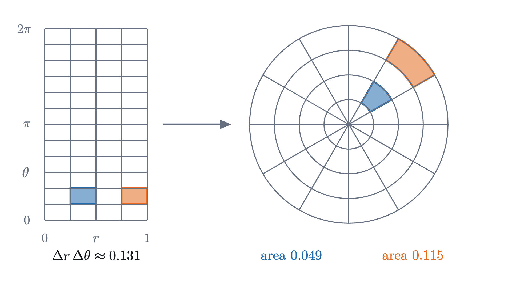
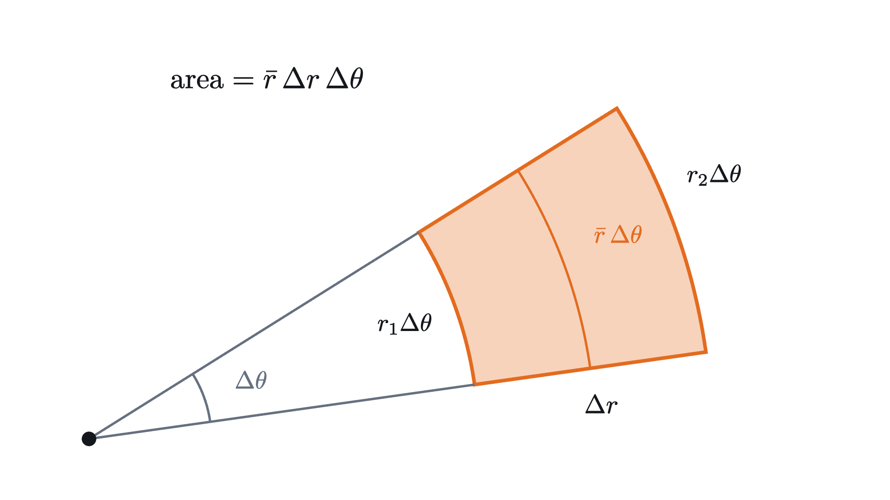

Double integrals: volume under a surface
Volume under a surface is a limit of sums of thin columns. Slicing turns it into two ordinary integrals, and polar coordinates handle round regions.
AssumesSurfaces and contour maps: functions of two variablesWhat is an integral? Adding up to get areaThe fundamental theorem of calculus, explained and proved
How much rock is in a hill? For a box the answer is length times width times height, but a hill has a different height over every point of its base, so there is no single height to multiply by.
The area under a curve has no single height either, and the integral handles it by cutting the base into slices, treating the height as constant on each slice, adding the rectangles, and taking a limit. We will do the same with one more dimension, and find that the volume under a surface can be computed with two ordinary one-variable integrals, one inside the other.
Our hill is the one from the lesson on contour maps. At the map position $x$ kilometers east and $y$ kilometers north of a marker post, its height in hundreds of meters is
We want the volume of rock between the map plane $z = 0$ and the hill, above the square $0 \le x \le 2$, $-1 \le y \le 1$. The summit, at $(1, 0)$ with height 8, is over the center of this square. Our unit of volume is a box 1 km by 1 km and one height unit (100 m) tall, which is a tenth of a cubic kilometer.
Four columns by hand
Start as coarsely as possible. Cut the square base into four cells, each 1 km on a side, and over each cell pretend the hill is flat, at the height it has above the middle of the cell.
The middles of the cells are $(0.5, \pm 0.5)$ and $(1.5, \pm 0.5)$, and the heights there are
Each column stands on a base of area 1, so its volume is its height, and the four volumes add to 28. Measuring at the middle of each cell was a choice, and a different choice gives a different number.
Pause and try
Keep the same four cells, but give each column the height of the hill above the cell’s southwest corner instead of its middle. What total volume do you get? Which of the two estimates do you trust more, and why?
Show answerHide answer
The southwest corners are $(0, -1)$, $(1, -1)$, $(0, 0)$ and $(1, 0)$, with heights $f = 5, 7, 6, 8$. The total is $26$. A middle is a fairer representative of a cell than a corner, where the hill is not typical of the cell (one of these corners is the summit itself). But neither estimate comes with a guarantee. So far the answer is somewhere around 26 to 28.
Finer columns, and what the volume is
Two estimates that disagree by 2 are not an answer. The remedy is the one-variable remedy: make the cells smaller, so that the hill has less room to vary over each one. With $n$ cells along each side there are $n^2$ columns, each on a base of area $\frac{2}{n} \cdot \frac{2}{n}$, and using middles again the totals are
| cells along each side | columns | total volume |
|---|---|---|
| 2 | 4 | 28 |
| 4 | 16 | 27 |
| 8 | 64 | 26.75 |
| 16 | 256 | 26.6875 |
The animation at the top shows these four stages. The steps down shrink by a factor of 4 each time: $1$, then $0.25$, then $0.0625$. If that continues, the remaining steps add up to about $0.02$, which predicts a limit of $26\frac{2}{3}$.
We have not yet said what “the volume of the hill” means, since length times width times height applies to boxes only. As with area in one variable, the volume is defined to be the number these sums close in on, provided they close in on a single number however the cells and sample points are chosen.
Each term $f(x_{ij}^*, y_{ij}^*)\,\Delta A_{ij}$ is the volume of one column: height times base area. “Any choice of sample points” covers both the middles and the corners from the exercise, and demands that in the limit they agree. The symbol $dA$ recalls the base area $\Delta A_{ij}$.
When $f \ge 0$, the number $\iint_R f\,dA$ is what we mean by the volume under the graph of $f$ over $R$. Where $f$ is negative its columns count negatively, as area below the axis does in one variable.
The definition leaves open whether the limit exists. For the functions we care about it does.
We use this theorem without proof. Its proof is the two-variable version of the one-variable argument: on a closed rectangle a continuous function is uniformly continuous, so once the cells are small enough, $f$ varies by less than any prescribed amount over every cell at once, and that traps all the Riemann sums in a narrow band.
So the hill has a volume. The definition is little help in finding it, since nobody wants to sum $n^2$ columns and take a limit.
Slabs: the volume as an integral of areas
Take all the columns that share one value of $x$. They stand in a row running south to north, and together they approximate a thin slab of the hill: the part between two vertical planes $x = \text{const}$, close together. A slab’s volume is close to its thickness times the area of its face, and the area of its face is a one-variable problem.
Cut the hill with the vertical plane at a fixed $x$. The cut face is the region under the curve $z = f(x, y)$, where now only $y$ varies, from $-1$ to $1$. Its area is an ordinary integral:
Pause and try
Find the area of the cut face through the summit: compute $A(1) = \int_{-1}^{1} f(1, y)\,dy$. Then find $A(x)$ for a general $x$, remembering that $x$ is a constant while you integrate in $y$.
Show answerHide answer
At $x = 1$ the height is $f(1, y) = 8 - y^2$, with antiderivative $8y - \frac{y^3}{3}$, so $A(1) = \left(8 - \frac13\right) - \left(-8 + \frac13\right) = 16 - \frac23 = \frac{46}{3} \approx 15.33$. In general, writing $g(x) = 6 + 3x - x^3$ for the part that does not involve $y$, the height is $g(x) - y^2$ and $A(x) = 2g(x) - \frac23 = \frac{34}{3} + 6x - 2x^3$.
The step from antiderivative to area is the fundamental theorem of calculus: if $F' = f$ on $[a, b]$ and $f$ is continuous, then $\int_a^b f = F(b) - F(a)$.
Now sweep the cutting plane from $x = 0$ to $x = 2$. A slab of thickness $\Delta x$ at position $x$ has volume about $A(x)\,\Delta x$, and adding slabs is again a Riemann sum, this time for the one-variable function $A$.
So the volume should be the integral of the face areas:
That is $26\frac{2}{3}$, the value the column sums were heading for: about $2.67$ cubic kilometers of rock.
Written without the intermediate name $A$, the computation is an iterated integral,
read from the inside out: integrate in $y$ with $x$ held constant, then integrate the result in $x$.
The other order, and Fubini’s theorem
We could just as well cut with planes of constant $y$ and sweep from south to north.
Pause and try
Do it. Compute the face area $B(y) = \int_0^2 f(x, y)\,dx$, with $y$ held constant, and then $\int_{-1}^{1} B(y)\,dy$. Before you start: must the answer be $\frac{80}{3}$ again?
Show answerHide answer
With $y$ constant, an antiderivative of $6 + 3x - x^3 - y^2$ in $x$ is $6x + \frac32 x^2 - \frac14 x^4 - y^2 x$, so $B(y) = 12 + 6 - 4 - 2y^2 = 14 - 2y^2$. Then $\int_{-1}^{1} (14 - 2y^2)\,dy = 28 - \frac43 = \frac{80}{3}$. It had better be the same, since both computations measure the same rock.
The two answers agree, and the reason is visible at the level of columns. A Riemann sum is a sum of numbers laid out in a grid, one for each cell. You may add a grid of numbers row by row or column by column, and the grand total is the same.
For finite sums that settles it. For integrals a limit is involved, and the statement becomes a theorem, named for Guido Fubini.
We cite this theorem; here is the reason it is true and what a full proof adds. Take a Riemann sum with sample points on a grid, $(x_i^*, y_j^*)$, and group it by $x$:
The inner sum is a one-variable Riemann sum for $A(x_i^*) = \int_c^d f(x_i^*, y)\,dy$, so it is close to $A(x_i^*)$, and then the outer sum is close to $\sum_i A(x_i^*)\,\Delta x_i$, a Riemann sum for $\int_a^b A(x)\,dx$. That is the slab picture. What is missing is control of the word “close”: the inner sums must be within $\varepsilon$ of $A(x_i^*)$ for every $i$ at once, with one mesh serving all of them, or the errors could add up. Uniform continuity of $f$ on $R$ supplies that, and also shows that $A$ is continuous, so that the outer integral exists.
Without the hypothesis the two orders can disagree. For $f(x, y) = \dfrac{x^2 - y^2}{(x^2 + y^2)^2}$ on the square $0 \le x \le 1$, $0 \le y \le 1$, integrating in $y$ first gives $\frac{\pi}{4}$ and integrating in $x$ first gives $-\frac{\pi}{4}$. This function is unbounded near the origin, so it is not continuous on the closed square. The last problem works through it.
Regions that are not rectangles
Suppose the base is a region $D$ with curved sides. The definition extends with a simple device: enclose $D$ in a rectangle $R$, and let $\tilde f$ equal $f$ on $D$ and $0$ everywhere else in $R$. Columns outside $D$ then have height 0.
The slab picture still tells us how to compute it. Take $D$ to be the region between the parabola $y = x^2$ and the line $y = x$, which cross at $(0, 0)$ and $(1, 1)$. Fix $x$ between 0 and 1. The slice of $D$ at that $x$ is the segment from the parabola up to the line, so the face of the slab has area $\int_{x^2}^{x} f(x, y)\,dy$. The limits now depend on $x$, which is harmless, because $x$ is a constant during the inner integration.
This is also cited. It does not follow at once from the version for rectangles, because $\tilde f$ jumps from $f$ to 0 across the boundary of $D$ and so is not continuous on $R$. The extra ingredient is that the boundary curves are thin: they can be covered by cells of total area as small as we like, so the columns that straddle the boundary contribute nothing in the limit.
Round regions and the polar area element
Some regions resist both slicings. Take the dome $z = 1 - x^2 - y^2$ over the unit disc $x^2 + y^2 \le 1$. A slice at fixed $x$ runs from $y = -\sqrt{1 - x^2}$ to $y = \sqrt{1 - x^2}$, and the square roots make the integrals unpleasant. Yet in terms of the distance $r$ from the origin, the region is just $r \le 1$ and the height is $1 - r^2$.
So describe points by polar coordinates: the distance $r \ge 0$ from the origin and the angle $\theta$ counterclockwise from the positive $x$-axis, with $x = r\cos\theta$ and $y = r\sin\theta$. In these coordinates the disc is the rectangle $0 \le r \le 1$, $0 \le \theta \le 2\pi$. It is tempting to treat $r$ and $\theta$ just as we treated $x$ and $y$.
Pause and try
The area of a region $D$ is $\iint_D 1\,dA$, since a slab of height 1 has volume equal to its base area. Test the tempting idea on the unit disc: compute $\int_0^{2\pi} \int_0^1 1\,dr\,d\theta$. What should the answer have been?
Show answerHide answer
The inner integral is 1 and the outer is $2\pi$, so the tempting formula gives $2\pi \approx 6.28$. The area of the unit disc is $\pi \approx 3.14$. The formula is wrong by a factor of 2, so $dr\,d\theta$ cannot be the area of a small piece.
To see what went wrong, look at the pieces. Cutting the $(r, \theta)$ rectangle into equal cells cuts the disc by circles and rays, and the resulting pieces of the disc are far from equal.

The Riemann sum must weight each column by the true area of its base, so we need the area of one polar cell.

The cell is the difference of two circular sectors. A sector of radius $r$ and angle $\Delta\theta$ is the fraction $\frac{\Delta\theta}{2\pi}$ of a full disc, so its area is $\frac{\Delta\theta}{2\pi} \cdot \pi r^2 = \frac12 r^2 \Delta\theta$. Subtracting the inner sector from the outer one,
where $\bar r = \frac{r_1 + r_2}{2}$ is the radius at the middle of the cell. This is exact. A polar cell has the area of a rectangle with sides $\Delta r$ and $\bar r\,\Delta\theta$: one side is a step outward, and the other is an arc, whose length is the angle times the radius. The factor $\bar r$ is the stretching that the tempting formula ignored.
Now form a Riemann sum over polar cells, sampling $f$ at the middle of each:
Read this as a sum over the cells of the $(r, \theta)$ rectangle, each of area $\Delta r_i\,\Delta\theta_j$. It is then an ordinary Riemann sum for the function $f(r\cos\theta, r\sin\theta)\,r$, with the extra factor $r$ inside.
What we showed: sums over polar cells are Riemann sums of $f(r\cos\theta, r\sin\theta)\,r$ on a rectangle, so they converge to the iterated integral on the right. What we did not show: that sums over curved polar cells converge to the double integral on the left, which was defined with rectangular cells. That step is part of the change of variables theorem, which we cite.
With the factor $r$ the area of the unit disc comes out right: $\int_0^{2\pi} \int_0^1 r\,dr\,d\theta = 2\pi \cdot \frac12 = \pi$.
The Gaussian integral
The factor $r$ looks like a nuisance, but here it is the reason a computation works. The bell curve $e^{-x^2}$ has no antiderivative that can be written with the usual functions (a theorem of Liouville), so the fundamental theorem cannot evaluate the area under it. Yet the total area is known exactly.
Write $I(a) = \int_{-a}^{a} e^{-x^2}\,dx$. The idea is to compute $I(a)^2$ as a volume. Because $e^{-x^2 - y^2} = e^{-x^2} e^{-y^2}$, Fubini’s theorem over the square $S_a$: $-a \le x \le a$, $-a \le y \le a$ gives
The function $e^{-x^2-y^2} = e^{-r^2}$ depends only on $r$, so discs suit it better than squares. Over the disc $D_\rho$ of radius $\rho$ centered at the origin, the factor $r$ supplies exactly the derivative of the exponent that was missing in one variable.
Pause and try
Compute $\iint_{D_\rho} e^{-x^2 - y^2}\,dA$ in polar coordinates.
Show answerHide answer
$\int_0^{2\pi} \int_0^\rho e^{-r^2}\,r\,dr\,d\theta$. Since the derivative of $-\frac12 e^{-r^2}$ is $r e^{-r^2}$, the inner integral is $\frac12\left(1 - e^{-\rho^2}\right)$, and the outer integral multiplies by $2\pi$. The result is $\pi\left(1 - e^{-\rho^2}\right)$.
A remark on the meaning of $\int_{-\infty}^{\infty}$. The usual definition of an improper integral lets the two ends go to infinity separately, as $\lim_{b \to \infty} \int_0^b + \lim_{a \to \infty} \int_{-a}^0$, and our theorem used a symmetric interval. Here the two agree: $e^{-x^2}$ is even, so each half is $\frac12 I(a)$ and tends to $\frac{\sqrt\pi}{2}$. Notice also that the proof never integrated over the whole plane. It compared integrals over bounded squares and discs, to which Fubini’s theorem and the polar formula apply as stated, and took one limit at the end.
This integral is the reason the normal distribution of statistics carries a $\sqrt{2\pi}$ in its formula.
Check yourself
A plate covers the disc $x^2 + y^2 \le 4$, and its density at $(x, y)$ is $\sigma(x, y)$. Which integral gives its mass $\iint_D \sigma\,dA$?
Step back. The definition of a double integral is a limit of sums of columns, and it is the definition that says what volume means and that gives the proofs something to hold on to. But every computation here went through slabs: a volume is an integral of cross-section areas, so a double integral becomes two single ones. The hard parts were choosing how to slice, which is a question about the picture of the region, and remembering that in polar coordinates a cell’s area is $r\,\Delta r\,\Delta\theta$.
Problems
The hill is $f(x, y) = 6 + 3x - x^3 - y^2$. Problems 1 and 2 are warm-ups, 3 to 5 combine ideas, and 6 and 7 go further.
Problem 1
Compute $\displaystyle\iint_R (x + 2y)\,dA$ over the rectangle $0 \le x \le 3$, $0 \le y \le 2$, in both orders.
Show solutionHide solution
$y$ first. $\int_0^2 (x + 2y)\,dy = \left[xy + y^2\right]_0^2 = 2x + 4$, and $\int_0^3 (2x + 4)\,dx = 9 + 12 = 21$. $x$ first. $\int_0^3 (x + 2y)\,dx = \left[\frac{x^2}{2} + 2xy\right]_0^3 = \frac92 + 6y$, and $\int_0^2 \left(\frac92 + 6y\right) dy = 9 + 12 = 21$. The two agree, as Fubini’s theorem requires for a continuous integrand.
Problem 2
Find the volume of the hill above the square $-1 \le x \le 1$, $-1 \le y \le 1$, which has the pass on its west edge and the summit on its east edge. Then find the average height of the hill over that square, defined as the volume divided by the area of the base.
Show solutionHide solution
Integrate in $y$ first: $\int_{-1}^{1} (6 + 3x - x^3 - y^2)\,dy = 2(6 + 3x - x^3) - \frac23$. Then in $x$ over $[-1, 1]$: the odd terms $3x$ and $x^3$ integrate to 0, leaving $\int_{-1}^{1} \left(12 - \frac23\right) dx = 24 - \frac43 = \frac{68}{3} \approx 22.67$. The base has area 4, so the average height is $\frac{17}{3} \approx 5.67$, that is, about 567 m. It lies between the lowest height on the square, 3, and the highest, 8, as an average must.
Problem 3
Let $T$ be the triangle with corners $(0, 0)$, $(1, 0)$ and $(0, 1)$. Compute $\displaystyle\iint_T (x + y)\,dA$.
Show solutionHide solution
The slanted side is the line $y = 1 - x$. For $0 \le x \le 1$ the slice at $x$ is $0 \le y \le 1 - x$. The inner integral is $\int_0^{1-x} (x + y)\,dy = x(1 - x) + \frac{(1-x)^2}{2} = \frac{1 - x^2}{2}$, after expanding: $x - x^2 + \frac12 - x + \frac{x^2}{2} = \frac12 - \frac{x^2}{2}$. Then $\int_0^1 \frac{1 - x^2}{2}\,dx = \frac12\left(1 - \frac13\right) = \frac13$.
Problem 4
Evaluate $\displaystyle\int_0^1 \left( \int_x^1 e^{y^2}\,dy \right) dx$. The inner integral cannot be done as it stands.
Show solutionHide solution
The function $e^{y^2}$ has no elementary antiderivative in $y$, so reverse the order. The limits describe the region $0 \le x \le 1$, $x \le y \le 1$: the triangle with corners $(0, 0)$, $(0, 1)$, $(1, 1)$, above the line $y = x$. Described with $y$ outermost, $y$ runs from 0 to 1 and, for each $y$, $x$ runs from 0 to $y$. The integrand is continuous, so the theorem on regions between graphs gives the same value in either order:
The inner integration in $x$ produced the factor $y$ that makes the outer integral possible.
Problem 5
Use polar coordinates to find the volume of a ball of radius $a$. (The upper half of the sphere $x^2 + y^2 + z^2 = a^2$ is the graph of $z = \sqrt{a^2 - x^2 - y^2}$ over the disc of radius $a$.)
Show solutionHide solution
The ball is two equal halves, so its volume is $2\iint_D \sqrt{a^2 - x^2 - y^2}\,dA$ over the disc $D$ of radius $a$. In polar coordinates this is
The derivative of $-\frac13 (a^2 - r^2)^{3/2}$ with respect to $r$ is $r\sqrt{a^2 - r^2}$, so the inner integral is $\left[-\frac13 (a^2 - r^2)^{3/2}\right]_0^a = \frac{a^3}{3}$. The outer integral multiplies by $2\pi$, and the factor 2 in front gives $\frac{4}{3}\pi a^3$. This agrees with the value Archimedes found by comparing slices.
Problem 6
The standard normal curve of statistics is $\varphi(x) = \dfrac{1}{\sqrt{2\pi}}\,e^{-x^2/2}$. Using the Gaussian integral, show that the total area under it is 1.
Show solutionHide solution
Substitute $x = \sqrt2\,u$, so $dx = \sqrt2\,du$ and $e^{-x^2/2} = e^{-u^2}$. As $x$ runs from $-a$ to $a$, $u$ runs from $-a/\sqrt2$ to $a/\sqrt2$, so
As $a \to \infty$ the right side tends to $\sqrt2 \cdot \sqrt\pi = \sqrt{2\pi}$ by the theorem. Dividing by $\sqrt{2\pi}$ gives total area 1.
Problem 7
Let $f(x, y) = \dfrac{x^2 - y^2}{(x^2 + y^2)^2}$ for $(x, y) \ne (0, 0)$. (a) Verify that $\dfrac{\partial}{\partial y}\!\left(\dfrac{y}{x^2 + y^2}\right) = f(x, y)$. (b) Use (a) to compute $\int_0^1 \left( \int_0^1 f\,dy \right) dx$. (c) Without further integration, find $\int_0^1 \left( \int_0^1 f\,dx \right) dy$. (d) Why does this not contradict Fubini’s theorem?
Show solutionHide solution
(a) By the quotient rule, $\dfrac{\partial}{\partial y}\,\dfrac{y}{x^2 + y^2} = \dfrac{(x^2 + y^2) - y \cdot 2y}{(x^2 + y^2)^2} = \dfrac{x^2 - y^2}{(x^2 + y^2)^2}$.
(b) For a fixed $x > 0$, part (a) and the fundamental theorem give $\int_0^1 f(x, y)\,dy = \left[\dfrac{y}{x^2 + y^2}\right]_{y=0}^{y=1} = \dfrac{1}{x^2 + 1}$. Then $\int_0^1 \dfrac{dx}{1 + x^2} = \arctan 1 - \arctan 0 = \dfrac{\pi}{4}$.
(c) Exchanging the names of $x$ and $y$ turns $f$ into $-f$, since the numerator changes sign and the denominator does not. So the integral in the other order is the integral in (b) with the sign reversed: $-\dfrac{\pi}{4}$.
(d) Fubini’s theorem as stated needs $f$ to be continuous on the closed square. This $f$ is not defined at the origin and is unbounded near it: along the $x$-axis $f(x, 0) = \dfrac{1}{x^2}$, which grows without limit as $x \to 0$. No value assigned at the origin can make it continuous. The hypothesis fails, so the theorem says nothing, and the two iterated integrals are free to differ.